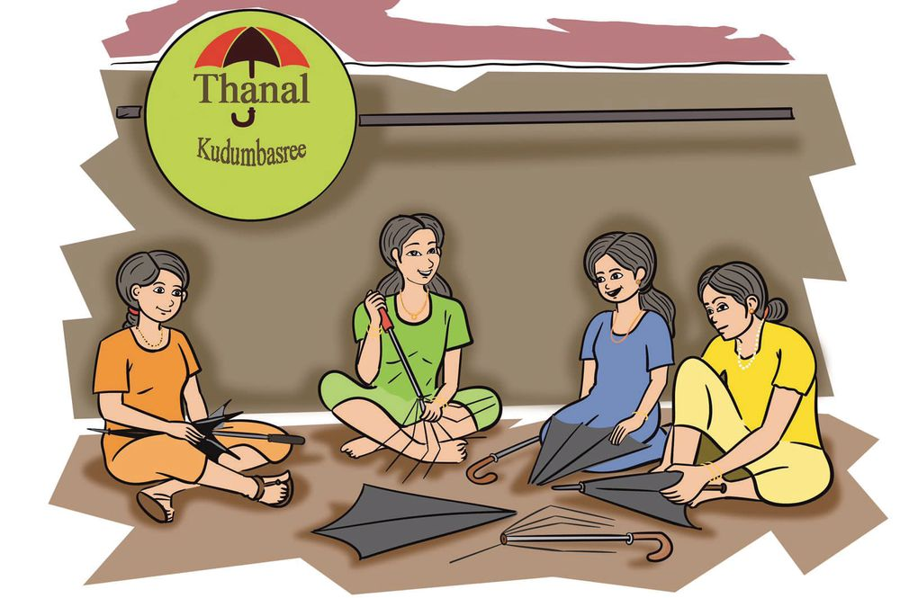
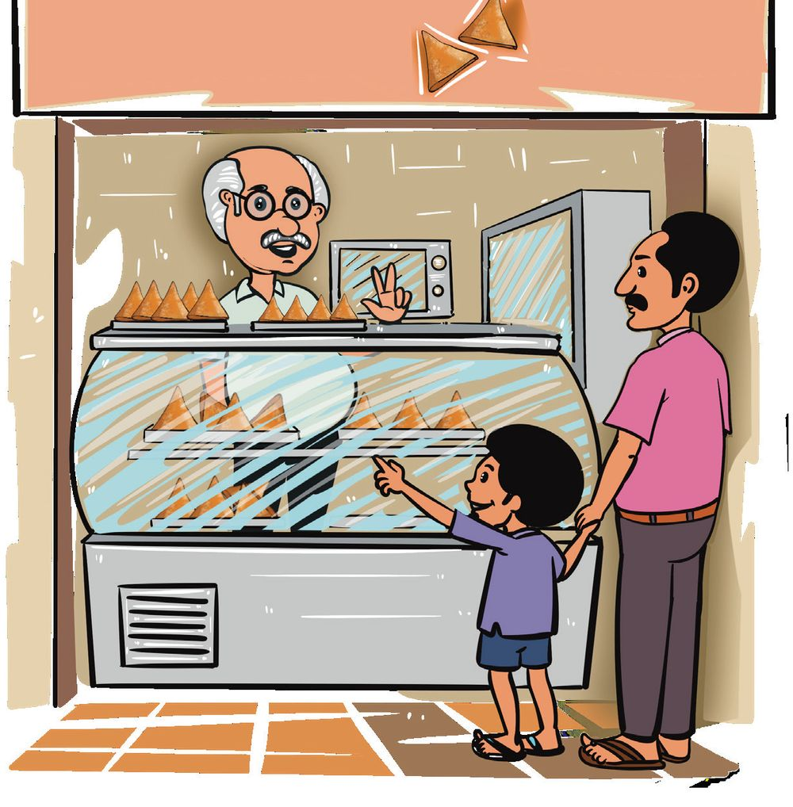
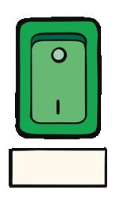
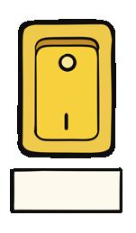
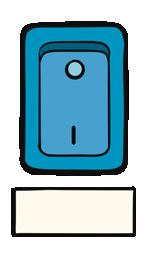
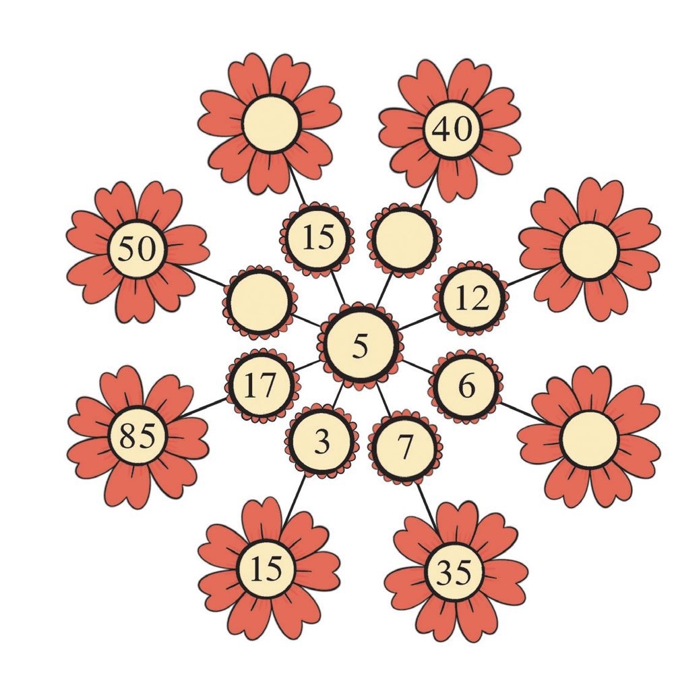
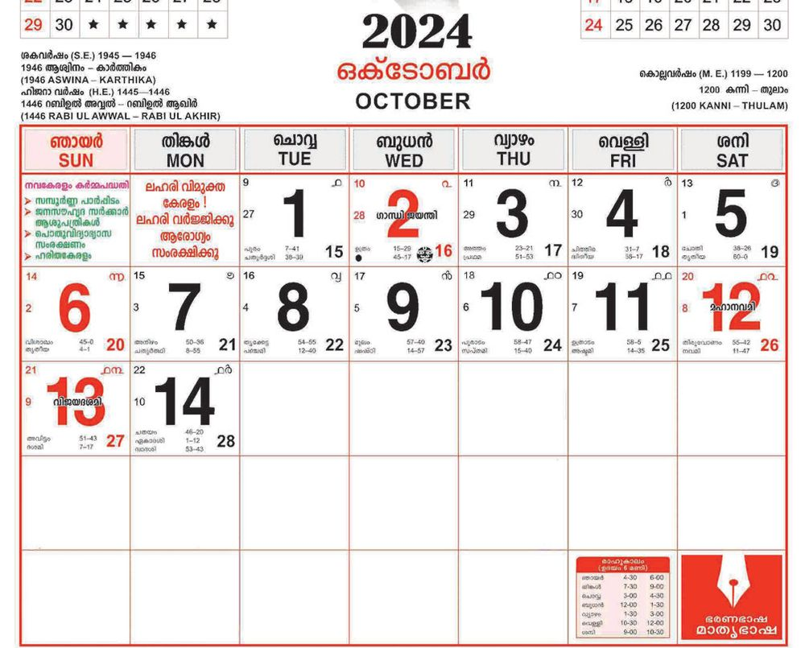
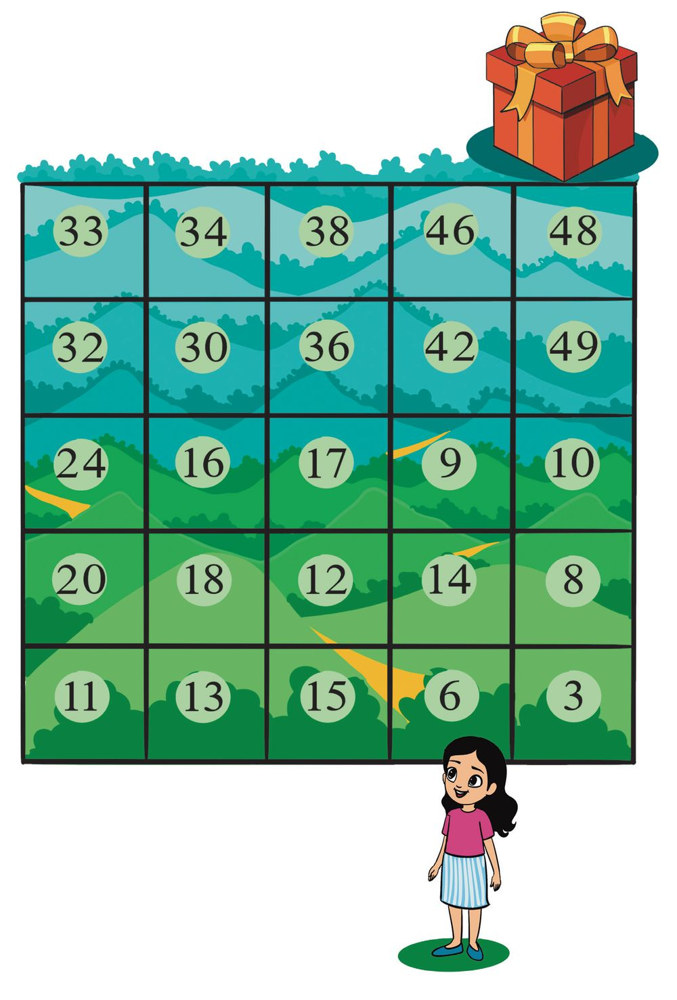
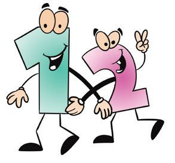

9 Adding Again and Again
Page 39

Page 40

Mathematics Standard - III
• Match the boxes. 3×2
10
16
4×2
5×2
7×2
8
6×4
14
8×2
18
9
3×3
6
24
9×2
Who is hiding?
128
Page 41


Adding Again and Again
8×4
5×1
6×3
1×2
6×4
4×2
7 × 10
6×6
9×5
9×6
• Do these multiplications.
• Colour the parts which have the answers. • Find out who is hiding.
Can You Find out? How many trees?.... How many birds?... If one bird sits on each tree, one bird will be left. If two birds sit on each tree, one tree will be left. How many trees? How many birds?
How Many are We? We can sit in groups of 2. And we can sit in groups of 3 also. We are less than 10. How many are we?
129
Page 42

Mathematics Standard - III
Sharing Sweetness It is Meenu's birthday. She brought payasam for class 3 in 4 trays with 7 cups in each tray. How many kids can be served? ....... + ....... + ....... + ....... = 4 × ....... = .......
When she brought two more trays, two cups were left over. How many kids in class 3 were given payasam? How I calculated:
Fill up the blanks 3 × 7 = 21 4 × 7 = 28 ------
Another way:
6×7=----------------10 × 7 = - -
How many trays of payasam were brought? How many cups of payasam were there in each tray?
How many cups of payasam were there in all? The number of children in class 3
130
Page 43


Adding Again and Again
To Class Two 10 trays were needed to give payasam to children of class 2. How many children are there in class 2? How I calculated
Songs of Weeks Seven days in a row, Make one week, you know. Can you tell me now How many days make two? Oh yes! Oh yes! We can tell Fourteen days in all.
7 trays, with 4 cups of payasam on each. How many cups are there in all?
4 times 7 cups
7 times 4 cups
4 × 7 = 28
7 × 4 = 28
131
Page 44


Mathematics Standard - III
Thanal Kudumbasree
Thanal Kudumbasree unit makes umbrellas. Meenus' mother is a member of this unit. She got an order for 11 umbrellas. Each umbrella must have 8 ribs. She has enough ribs to make 3 umbrellas. How many ribs does she have at home? ....... + ....... + ....... = ....... × ....... = .......
Meenu went with her mother to buy ribs for the remaining 8 umbrellas. How many ribs are needed? How many ribs are needed for 11 umbrellas? How I calculated:
How my friend calculated:
132
Page 45

Adding Again and Again
Calculate the answers and write in your notebook... • The price of one packet of crayons is 8 rupees. How much is needed to buy 6 packets?
• Meenu's school needs 8 paper cutters. The price of one is 7 rupees. How much money is needed?
• A cake can be cut into 8 pieces.
5 cakes were bought and cut as shown in the picture. How many pieces are there ?
• Didn't you see the picture of the chess board on the page 127?
How many squares have pieces on them? How many squares does the chess board have?
• A ship to Vizhinjam port, carrying a crane from China took 3 weeks to make the trip. How many days did it travel?
• Fill in the empty cells: 1
2
8
16
1
2
7
3
3
4
4
6
7
40
64
5
8
42
133
49
9
10
9
10
Page 46


Mathematics Standard - III
Selling Samosa Meenu's father and brother went to buy samosas for those making umbrellas. The price of a samosa is 9 rupees. Her father bought 8. How much should he pay? How I calculated:
Moosakka's
Two 9's make 3 × 9 = ........ 5 × 9 = ........ 7 × 9 = ........ 9 × 9 = ........
Samosa
2 × 9 = 18
Four 9's make Six 9's make 8 × 9 = ............ 10 × 9 = 90 50 × 9 = ............ 100 × 9 = ............
134
Page 47

Adding Again and Again
Multiply and Play 1×1
2×1
3×1
4×1
5×1
6×1
7×1
8×1
9×1
1×2
2×2
3×2
4×2
5×2
6×2
7×2
8×2
9×2
1×3
2×3
3×3
4×3
5×3
6×3
7×3
8×3
1×4
2×4
3×4
4×4
5×4
6×4
7×4
1×5
2×5
3×5
4×5
5×5
6×5
1×6
2×6
3×6
4×6
5×6
1×7
2×7
3×7
4×7
1×8
2×8
3×8
1×9
2×9
10 × 1
1 × 10 2 × 10 3 × 10 4 × 10 5 × 10 6 × 10 7 × 10 8 × 10 9 × 10 10×10
Draw cells like this in your note book and write the answers.
• Write the products in the coloured cells here:
• Write the products in the eighth row here. Is there anything special about them?
135
Page 48








Mathematics Standard - III
Switch on the Lights! See Meenu's project for the math fair. Calculate the product below each switch and fill the bulb showing this number with the same colour as the switch. Join the switch and the bulb. 21
36
27
48
25
81
3×9
5×5
7×3
6×6
9×9
6×8
Cricket Match • Meenu's sister hit 11 sixers (6 runs) and 15 boundaries
(4 runs). How many runs did she get from these? 15 × 1 = 15 How I calculated: 15 × 2 = 30 15 × 3 = 45 15 × 4 = 60 15 × 5 = 75
Runs from sixers
Runs from boundaries
Calculate without multiplying
10 times 6 = 60
...... times 4 = ......
1 times 6 = 6
........................... = ......
11 times 6 = 66
........................... = ......
136
29 × 8 = 30 × 8 = 240 31 × 8 = 50 × 5 = 51 × 5 = 255 52 × 5 =
Page 49

Adding Again and Again
Price of Bangles The price of a dozen bangles is 25 rupees. Meenu bought 4 dozen red bangles and 3 dozen blue. What is the total price? How I calculated:
Another way: One dozen means 12
Complete the tables: 1×6 = 6 2 × 6 = 12 ......... = ..... ......... = ..... ......... = ..... ......... = ..... ......... = ..... ......... = ..... ......... = .....
10 × 6 = 60 20 × 6 = 120 ......... = ..... ......... = ..... ......... = ..... ......... = ..... ......... = ..... ......... = ..... ......... = .....
44 × 6
Can you do it in your head? 40 × 6 = ....... 4 × 6 = ....... 44 × 6 = .......
• Write the tables of 7, 8 and 9 like this • Do these calculation in your head 110 × 6
52 × 6
• Make more questions. 137
38 × 6
Page 50


Mathematics Standard - III
Complete The Pookkalam
Complete the Pattern 1.
3, 6, 9, ......, ......, ......
2.
4, 8, ......, ......, 20, 24, ......
3.
27, 36, 45, ......, ......, ......
4.
45, 40, 35, ......, ......, ......
5.
15, 30, 45, ......, ......, ......
6.
25, 50, 75, ......, ......, ......
7.
100, 200, 300, 400, ......, ......, ......
The pattern I found out. 1.
............., ............., ............., .............
2.
............., ............., ............., .............
3.
............., ............., ............., .............
4.
............., ............., ............., .............
138
Page 51

Adding Again and Again
Math Fair The math fair in Meenu's school had many competitions and there were 6 winners. They were given books as gifts.
• The price of a book is 100 rupees. • When 6 books were bought, the price of each book was reduced by 5 rupees. What is the total amount paid? How I calculated:
How my friends calculated:
The price of one book Number of books Total price
• What kinds of currency notes can be given as the price of books?
Notes Rs. 500
Another way Number Amount 1
Notes Rs.500
Rs.200
Rs.200
Rs.100
Rs.100
Rs.50
1
Rs.50 Rs.20
Rs.20 Rs.10
2
Rs.10
Rs. 5
Rs.5
Total
Total
139
Number
Amount
Page 52


Mathematics Standard - III
• 10 currency notes were given to the book seller. Which notes can they be? Notes
Number Amount
Notes
Rs.500
Rs. 500
Rs. 200
Rs. 200
Rs. 100
Rs. 100
Rs. 50
Rs. 50
Rs. 20
Rs. 20
Rs. 10
Rs. 10
Rs. 5
Rs. 5
Total
Number Amount
Total
Did everyone write the same answer?
Christmas Tree Meenu bought 5 packets of trinkets to decorate her Christmas tree. The price of one packet is 98 rupees. What is the total price? How I calculated:
Another way:
140
Page 53



Adding Again and Again
Assessment 1.
Football stadium 99 people can be seated in one tier of the stadium, and there are 10 tiers. How many people can be seated in all?
2.
∗
How many people could have been seated, if each tier could seat 100?
∗
4 seats from each tier was removed to build another gate to the stadium. How many seats are there now?
What's the date? The first Monday of 2024 October is on the 7th. On what date is the fourth Monday?
3.
How many banana trees? Meenu planted 7 banana trees in a row. How many of them can be planted in 8 such rows? If 9 trees were planted in each row instead, how many could be planted?
141
Page 54

Mathematics Standard - III
4.
Math quiz 8 children won this month's math quiz in Meenu's school. It was decided to give each, a gift box with 6 items. The price list in two shops are given below. Micky Stores
Dora Stores
Pencil 5 rupees
Pencil 4 rupees
Pen 8 rupees
Pen 10 rupees
Eraser 3 rupees
Eraser 3 rupees
Ruler 7 rupees
Ruler 9 rupees
Sketch pen packet 30 rupees
Sketch pen packet 27 rupees
Crayon packet 10 rupees
Crayon packet 8 rupees
∗ From which shop is it better to buy the things? ∗ How much would it cost to buy all the eight gift packs from Dora stores?
∗ What if they were all bought from Micky stores? ∗ They bought some of the things from one store and some
from the other, depending on the price. Complete the table.
142
Page 55

Adding Again and Again
Item
Price
Total
∗ How much was spent for the 8 gifts? 5. Fill up the cells
•
Fill up the empty cells
•
Multiply along the rows and columns. 2
×
× 1
=
× ×
= .......
3
3
=
= ×
.......
=
.......
.......
×
×
.......
.......
=
=
18
.......
143
×
.......
=
....... ×
.......
× =
....... ×
.......
.......
....... =
=
24
Page 56



Mathematics Standard - III
6. Prize hunt
Take Meenu to the prize:
Take the path of multiplication by 6
144